Opencv in Visual Studio C++
Opencv with Visual Studio
C++ Version
1.环境配置问题
我们首先下好 Opencv 4.5.1 的包，安装好 Cmake 之后开始使用！
下面为了配置好 Opencv 的开发环境：我们必须书写一个 CmakeLists来链接库：
cmake_minimum_required(VERSION 2.8)
project(def) # 工程名称
set(SOURCES
default.cpp # 源文件
)
set(HEADERS
#main.hpp # 头文件
)
add_executable(Main #产生可执行区域
${SOURCES}
${HEADERS}
)
set(OpenCV_DIR "D:/Opencv4.5.1/opencv/build/x64/vc15/lib") # 找到二进制的坤文件
find_package(OpenCV REQUIRED)
if(OpenCV_FOUND)
target_include_directories(Main PUBLIC ${OpenCV_INCLUDE_DIRS})
target_link_libraries(Main ${OpenCV_LIBS})
# 上面两行代码把 Opencv 库所需要的文件和程序链接
endif() 随后，点击Cmake 把工作区和二进制生成文件的地址传进去
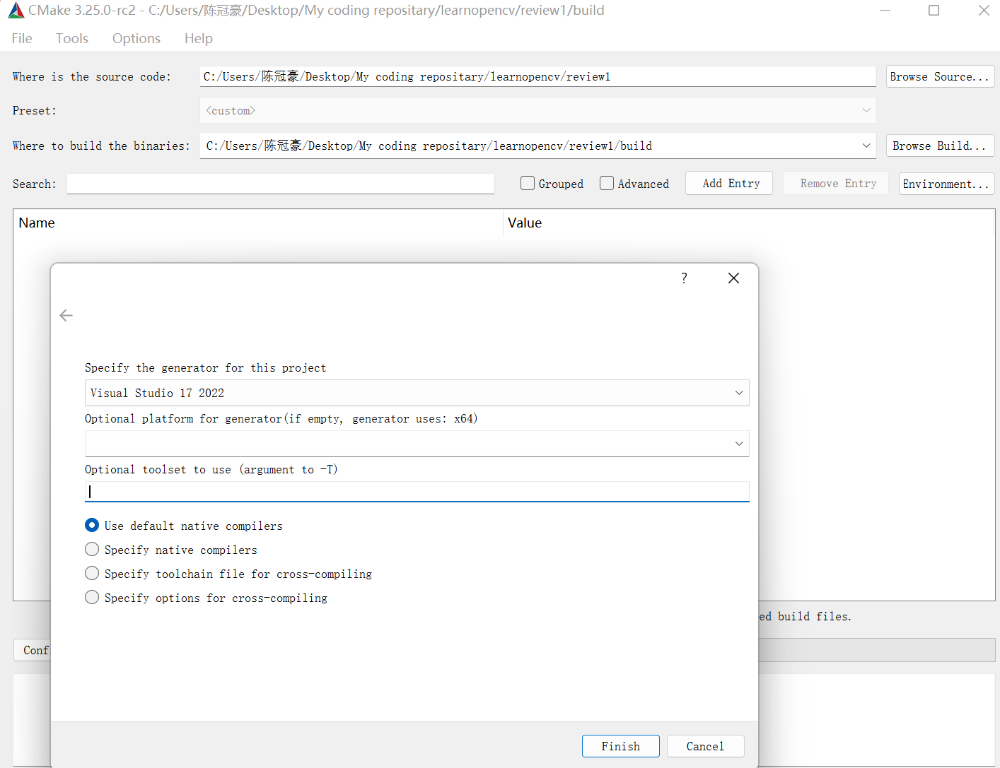
平台选择 64 位，点击 Configure 随后点击 Generate :留意有没有报错！
如果一切没有问题，那么，回到你的工作文件夹，选择BUILD文件夹，打开，随后找到：def.sIn文件，单击启动项目，当然我们需要更改启动项
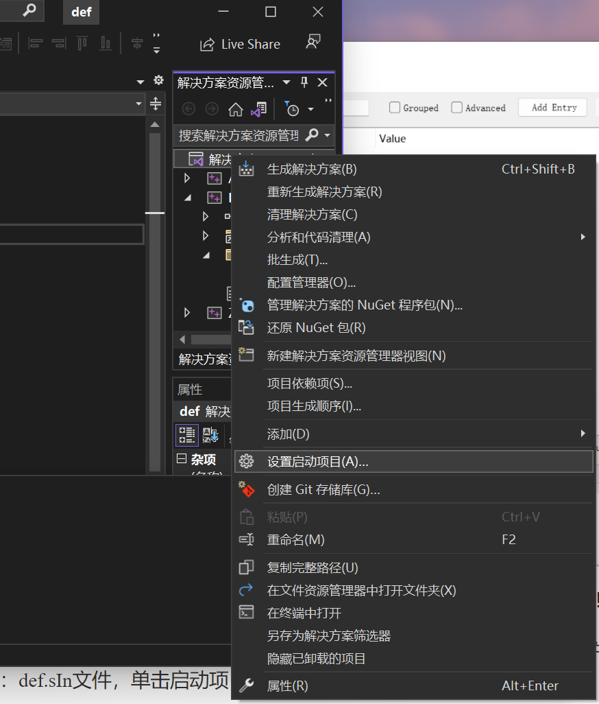
选择Main启动项即可！
当然可以使用以下代码测试你的环境！
#include<opencv2/opencv.hpp>
#include<iostream>
#include<string>
using namespace std;
using namespace cv;
int main()
{
string path = "C:\\Users\\陈冠豪\\Pictures\\Camera Roll\\2022-06-20_16.14.20.png";
Mat img = imread(path);
if (img.empty()) {
return -1;
}
imshow("1", img);
waitKey(0);
return 0;
}项目入门1：
我们首先来了解什么是图像：这很简单！我们在计算机中用一个矩阵，向里面填入色块实现图像的显示，我们的图像越高清，就说明我们的矩阵划分的越密集，这样，表现出来的就越是清晰！
在黑白图中，我们使用 8 位图来刻画我们的黑白图！0代表黑色，255 则是白色。
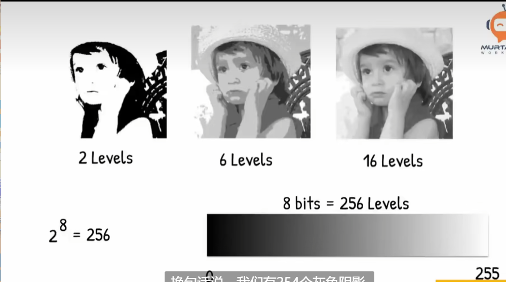
对于彩色图像，我们使用 BGR 三色图，以不同的比例的亮度来叠加在一起。
显示一个图像
下面我们来使用一个函数 imread 和 imshow!
先来引入头文件
#include<opencv2/opencv.hpp>
#include<iostream>
#include<string>
using namespace std;
using namespace cv; 现在看一下，有没有报错，一般而言成功了的环境是不会报错的！正是如此！
如果你有幸浏览到了 opencv 的文档，你会注意到 imread 表示的是从程序外面读取一个图像，并且将对象返回给一个叫做 Mat 的类型！函数需要一个string，表示的是图像的地址
# 这里找到一个图像的地址：
string path = "path_DIR";
# 然后传进去：
Mat img = imread(path); 这个 Mat 就是一个矩阵，存储着图像的信息。显示图像也是简单的：
imshow("NameWindows",img);
waitKey(0);// 防止图像一闪而过Examples:
#include<opencv2/opencv.hpp>
#include<iostream>
#include<string>
using namespace std;
using namespace cv;
int main()
{
string path = "C:\\Users\\陈冠豪\\Pictures\\Camera Roll\\2022-06-20_16.14.20.png";
Mat img = imread(path);
if (img.empty()) {
return -1;
}
imshow("1", img);
waitKey(0);
return 0;
}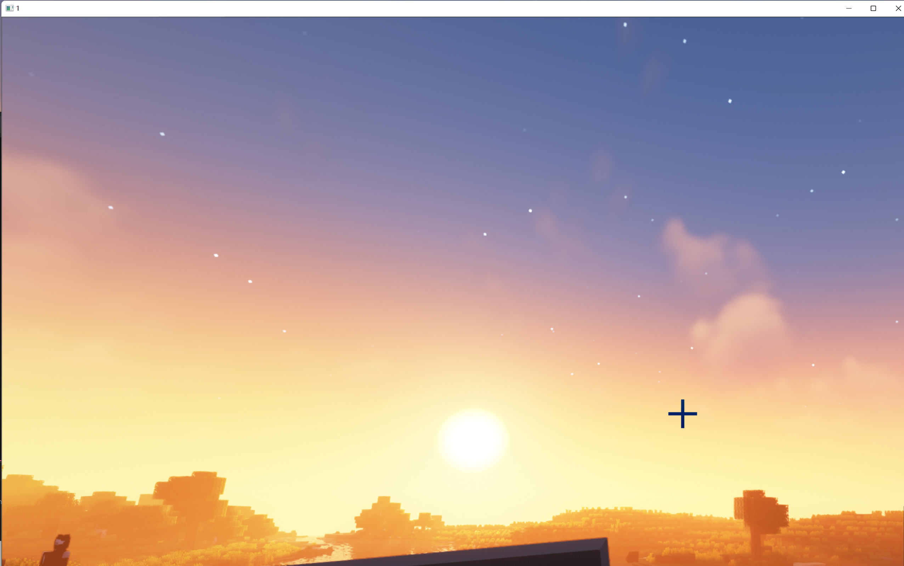
效果如上！
显示一个视频
视频的本质是一帧一帧图像的播放，基于此，我们可以导入，以及导出一个视频：
string path = "C:\\Users\\陈冠豪\\Videos\\2023-03-05 14-24-15.mp4";
VideoCapture videocap(path); 我们的 Opencv 里有一个专门搞视频的类型：
VideoCapture 类型，支持这样的构造：
VideoCapture videocap(path) 随后声明一个矩阵，他将会存储我们的视频中一帧的图片：
Mat img; 我们视频的读取是这样的：读取每一帧，然后显示，直到视频结束或者我们人为的退出：
while(1)
{
videocap.read(img);
imshow("Video",img);
waitKey(1); // 我们在这里决定了延迟是如何的，这里实现倍速或者是慢速播放
}#include<opencv2/opencv.hpp>
#include<iostream>
#include<string>
using namespace std;
using namespace cv;
int main()
{
string path = "C:\\Users\\陈冠豪\\Videos\\2023-03-05 14-31-23.mp4";
VideoCapture videocap(path);
Mat img;
while (1)
{
videocap.read(img);
imshow("1", img);
waitKey(20);
}
} 你当然可以选择你的摄像头！电脑的默认头是0，这意味着：
#include<opencv2/opencv.hpp>
#include<iostream>
#include<string>
using namespace std;
using namespace cv;
int main()
{
VideoCapture videocap(0);
Mat img;
while (1)
{
videocap.read(img);
imshow("1", img);
waitKey(20);
}
} 就可以看到你自己了！
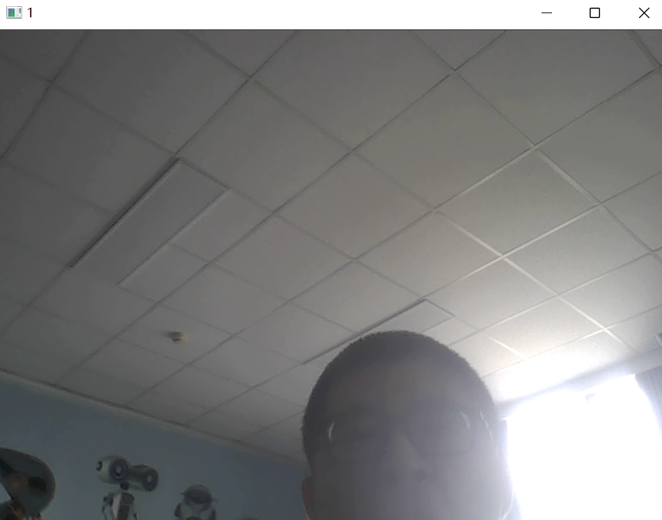
很好。
项目入门2：图像处理
下面，我们来一 一介绍函数的图像处理：
1）转化为灰度图：
来看这个函数：
cvtColor(imgSrc,imgDst,code); 这个函数把源图像转化为目标图像，以及转化方式：
#include<opencv2/opencv.hpp>
#include<iostream>
#include<string>
using namespace std;
using namespace cv;
int main()
{
Mat imgSrc, imgDst;
string path = "C:\\Users\\陈冠豪\\Pictures\\Camera Roll\\2022-06-20_16.14.20.png";
imgSrc = imread(path);
cvtColor(imgSrc, imgDst, COLOR_BGR2GRAY);
imshow("gray", imgDst);
waitKey(0);
}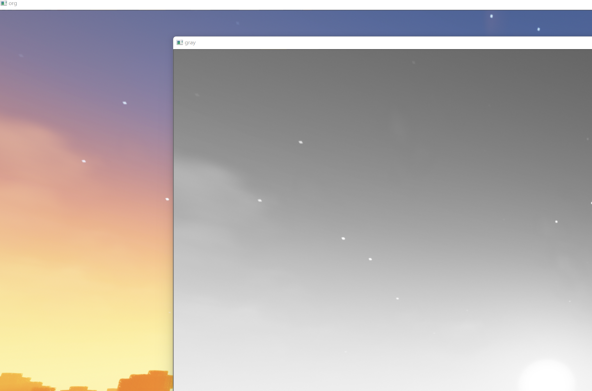
图像模糊（高斯模糊）
使用函数 GaussainBlur 来实现！
小技巧，如果你不知道这个函数是干什么的，传什么样的参数：可以Ctrl+单击
CV_EXPORTS_W void GaussianBlur( InputArray src, OutputArray dst, Size ksize,
double sigmaX, double sigmaY = 0,
int borderType = BORDER_DEFAULT );
/** @brief Applies the bilateral filter to an image.
The function applies bilateral filtering to the input image, as described in
http://www.dai.ed.ac.uk/CVonline/LOCAL_COPIES/MANDUCHI1/Bilateral_Filtering.html
bilateralFilter can reduce unwanted noise very well while keeping edges fairly sharp. However, it is
very slow compared to most filters.
_Sigma values_: For simplicity, you can set the 2 sigma values to be the same. If they are small (\<
10), the filter will not have much effect, whereas if they are large (\> 150), they will have a very
strong effect, making the image look "cartoonish".
_Filter size_: Large filters (d \> 5) are very slow, so it is recommended to use d=5 for real-time
applications, and perhaps d=9 for offline applications that need heavy noise filtering.
This filter does not work inplace.
@param src Source 8-bit or floating-point, 1-channel or 3-channel image.
@param dst Destination image of the same size and type as src .
@param d Diameter of each pixel neighborhood that is used during filtering. If it is non-positive,
it is computed from sigmaSpace.
@param sigmaColor Filter sigma in the color space. A larger value of the parameter means that
farther colors within the pixel neighborhood (see sigmaSpace) will be mixed together, resulting
in larger areas of semi-equal color.
@param sigmaSpace Filter sigma in the coordinate space. A larger value of the parameter means that
farther pixels will influence each other as long as their colors are close enough (see sigmaColor
). When d\>0, it specifies the neighborhood size regardless of sigmaSpace. Otherwise, d is
proportional to sigmaSpace.
@param borderType border mode used to extrapolate pixels outside of the image, see #BorderTypes
*/ 可以看到，这个函数需要源图像，目标图像和高斯核的大小，以及两个方差（其中有一个是必须的）
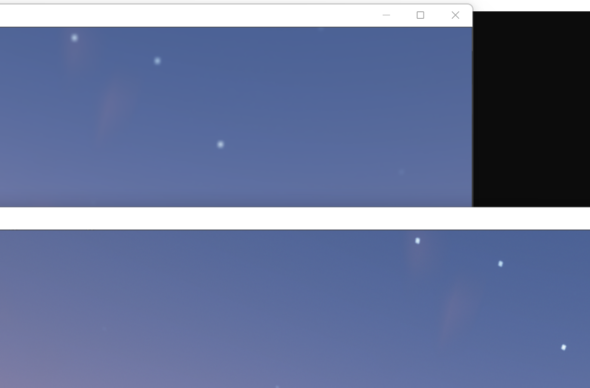
#include<opencv2/opencv.hpp>
#include<iostream>
#include<string>
using namespace std;
using namespace cv;
int main()
{
Mat imgSrc,imgBlur;
string path = "C:\\Users\\陈冠豪\\Pictures\\Camera Roll\\2022-06-20_16.14.20.png";
imgSrc = imread(path);
GaussianBlur(imgSrc, imgBlur, Size(7, 7), 5, 0);
imshow("1", imgBlur);
imshow("org", imgSrc);
waitKey(0);
}图像边缘检测
下面我们要使用函数Canny 来给我们的图像进行检测！
我们在使用 Canny 检测的时候，往往还会在之前使用模糊来更好的检测！！！
通读一下函数需求：
CV_EXPORTS_W void Canny( InputArray image, OutputArray edges,
double threshold1, double threshold2,
int apertureSize = 3, bool L2gradient = false );
/** \overload
Finds edges in an image using the Canny algorithm with custom image gradient.
@param dx 16-bit x derivative of input image (CV_16SC1 or CV_16SC3).
@param dy 16-bit y derivative of input image (same type as dx).
@param edges output edge map; single channels 8-bit image, which has the same size as image .
@param threshold1 first threshold for the hysteresis procedure.
@param threshold2 second threshold for the hysteresis procedure.
@param L2gradient a flag, indicating whether a more accurate \f$L_2\f$ norm
\f$=\sqrt{(dI/dx)^2 + (dI/dy)^2}\f$ should be used to calculate the image gradient magnitude (
L2gradient=true ), or whether the default \f$L_1\f$ norm \f$=|dI/dx|+|dI/dy|\f$ is enough (
L2gradient=false ).
*/ 可以看到，我们需要源图像，目标图像，两个阈值
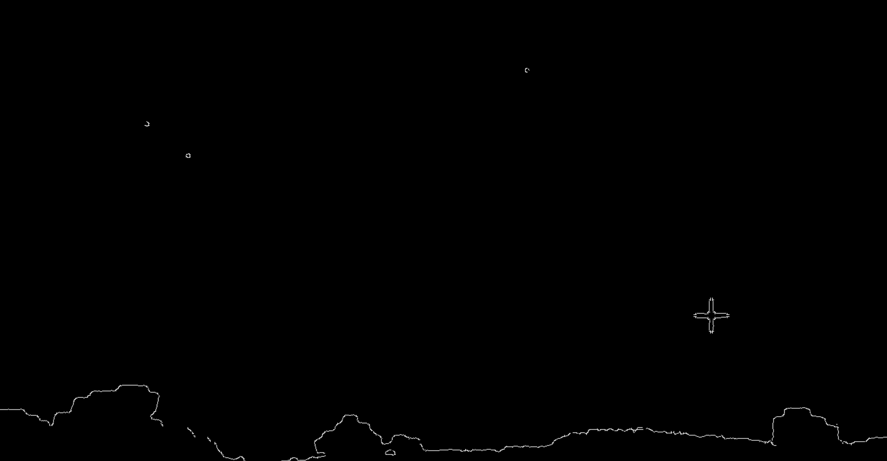
#include<opencv2/opencv.hpp>
#include<iostream>
#include<string>
using namespace std;
using namespace cv;
int main()
{
Mat imgSrc,imgBlur,imgCanny;
string path = "C:\\Users\\陈冠豪\\Pictures\\Camera Roll\\2022-06-20_16.14.20.png";
imgSrc = imread(path);
GaussianBlur(imgSrc, imgBlur, Size(7, 7), 5, 0);
Canny(imgBlur,imgCanny,50,150);
imshow("org", imgSrc);
imshow("canny", imgCanny);
waitKey(0);
} 我们用这个来检测阈值，当然，阈值越低，对边界越敏感：
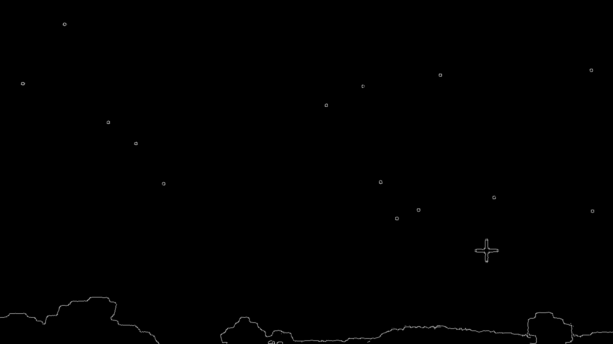
下调阈值为 25,75后的结果！
图像膨胀
当我们的图像特征不明显的时候，我们可以放大特征来便于我们的检测：
使用的是函数 dilate:
CV_EXPORTS_W void dilate( InputArray src,
OutputArray dst,
InputArray kernel,
Point anchor = Point(-1,-1),
int iterations = 1,
int borderType = BORDER_CONSTANT,
const Scalar& borderValue = morphologyDefaultBorderValue()
);
/** @brief Performs advanced morphological transformations.
The function cv::morphologyEx can perform advanced morphological transformations using an erosion and dilation as
basic operations.
Any of the operations can be done in-place. In case of multi-channel images, each channel is
processed independently.
@param src Source image. The number of channels can be arbitrary. The depth should be one of
CV_8U, CV_16U, CV_16S, CV_32F or CV_64F.
@param dst Destination image of the same size and type as source image.
@param op Type of a morphological operation, see #MorphTypes
@param kernel Structuring element. It can be created using #getStructuringElement.
@param anchor Anchor position with the kernel. Negative values mean that the anchor is at the
kernel center.
@param iterations Number of times erosion and dilation are applied.
@param borderType Pixel extrapolation method, see #BorderTypes. #BORDER_WRAP is not supported.
@param borderValue Border value in case of a constant border. The default value has a special
meaning.
@sa dilate, erode, getStructuringElement
@note The number of iterations is the number of times erosion or dilatation operation will be applied.
For instance, an opening operation (#MORPH_OPEN) with two iterations is equivalent to apply
successively: erode -> erode -> dilate -> dilate (and not erode -> dilate -> erode -> dilate).
*/ 在我们使用完Canny之后：
我们的核怎么来呢？专门使用函数 getStructuringElement来完成我们的工作
Mat kernel = getStructuringElement(MORPH_RECT,Size(5,5));
# 这个核越大膨胀越厉害 特征被明显的放大了！
图像侵蚀
我们使用的函数是 Erode:
CV_EXPORTS_W void erode( InputArray src, OutputArray dst, InputArray kernel,
Point anchor = Point(-1,-1), int iterations = 1,
int borderType = BORDER_CONSTANT,
const Scalar& borderValue = morphologyDefaultBorderValue() );
/** @example samples/cpp/tutorial_code/ImgProc/Morphology_1.cpp
Erosion and Dilation sample code

Check @ref tutorial_erosion_dilatation "the corresponding tutorial" for more details
*/
/** @brief Dilates an image by using a specific structuring element.
The function dilates the source image using the specified structuring element that determines the
shape of a pixel neighborhood over which the maximum is taken:
\f[\texttt{dst} (x,y) = \max _{(x',y'): \, \texttt{element} (x',y') \ne0 } \texttt{src} (x+x',y+y')\f]
The function supports the in-place mode. Dilation can be applied several ( iterations ) times. In
case of multi-channel images, each channel is processed independently.
@param src input image; the number of channels can be arbitrary, but the depth should be one of
CV_8U, CV_16U, CV_16S, CV_32F or CV_64F.
@param dst output image of the same size and type as src.
@param kernel structuring element used for dilation; if elemenat=Mat(), a 3 x 3 rectangular
structuring element is used. Kernel can be created using #getStructuringElement
@param anchor position of the anchor within the element; default value (-1, -1) means that the
anchor is at the element center.
@param iterations number of times dilation is applied.
@param borderType pixel extrapolation method, see #BorderTypes. #BORDER_WRAP is not suported.
@param borderValue border value in case of a constant border
@sa erode, morphologyEx, getStructuringElement
*/代码一览：
#include<opencv2/opencv.hpp>
#include<iostream>
#include<string>
using namespace std;
using namespace cv;
int main()
{
Mat imgSrc,imgBlur,imgCanny,imgDial,imgErode;
string path = "C:\\Users\\陈冠豪\\Pictures\\Camera Roll\\2022-06-20_16.14.20.png";
imgSrc = imread(path);
GaussianBlur(imgSrc, imgBlur, Size(7, 7), 5, 0);
Canny(imgBlur,imgCanny,50,150);
Mat kernel = getStructuringElement(MORPH_RECT, Size(5, 5));
dilate(imgCanny, imgDial, kernel);
erode(imgDial, imgErode, kernel);
imshow("org", imgSrc);
imshow("dilate", imgDial);
imshow("erode", imgErode);
waitKey(0);
}图像大小调整与变换
很容易猜到重新设定大小的函数就是Resize:
我们首先学习一下怎样查看图像的大小：
cout << img.size()<<endl; 现在我们可以调整大小了：
resize(img,imgResize,Size(640,480));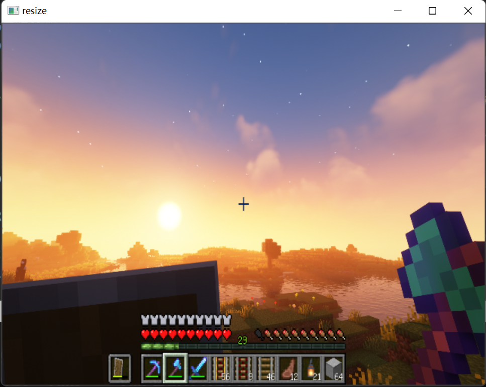
如果希望是等比例的放缩，可以采用这样的方式：
resize(img,imgResize,Size(),xRatio,yRatio); 我们也可以裁剪图像：
Rect roi(100,100,200,300); // 这里产生一个区域矩形
imgCrop = img(roi);//从图像中生成子图像 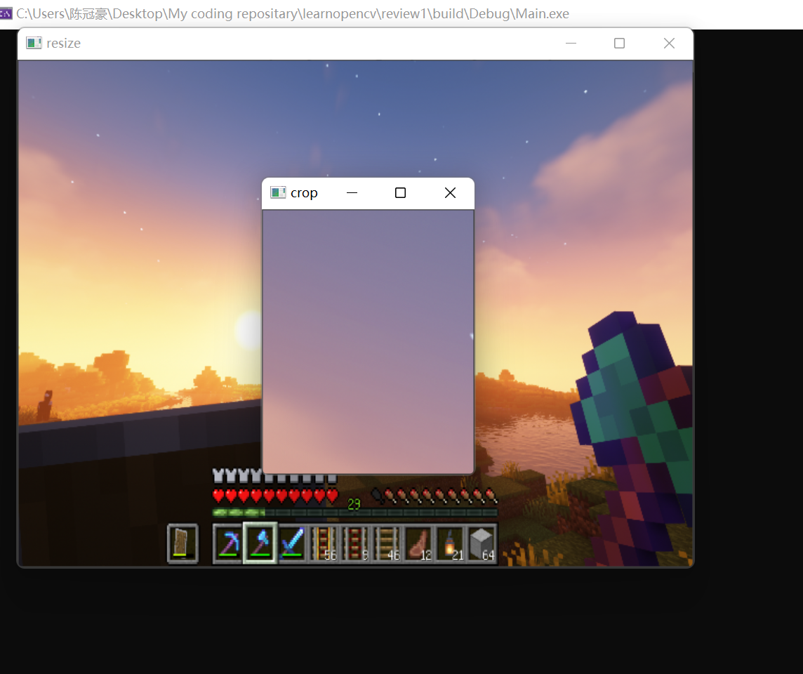